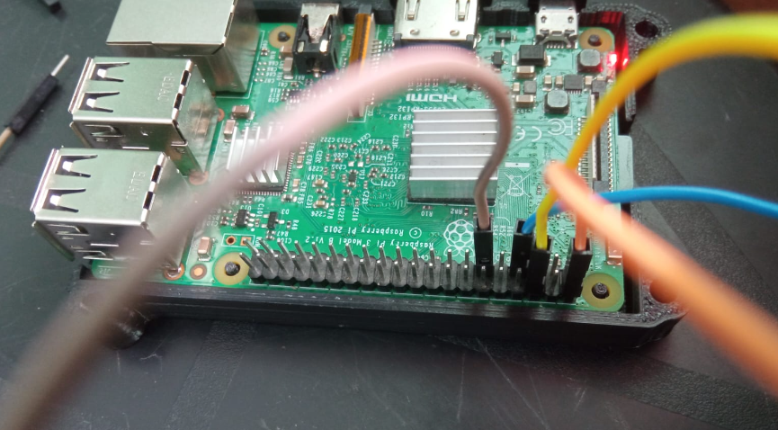
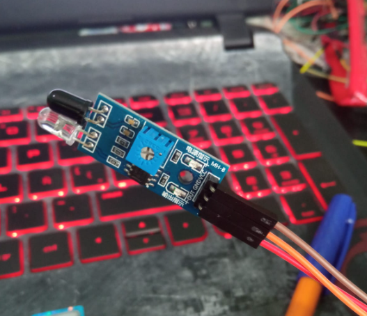
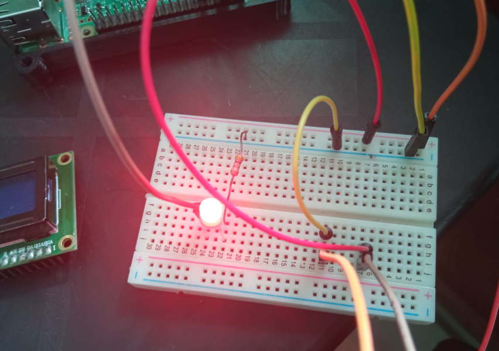

Este circuito es prácticamente idéntico al anterior con la diferencia de que este sensor está activo mientras exista alguna obstrucción, el led se apagara en el momento que el sensor este totalmente libre
Realizado por Christopher Eduardo Barrientos Guerra